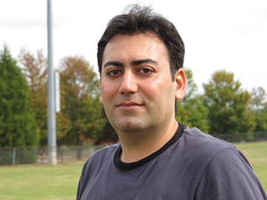

|
Mehdi Allahyari
PhD Candidate Semantic Computing Laboratory (SeNCe) Department of Computer Science The University of Georgia USA Curriculum Vitae
Email: MEHDI [at] UGA [dot] EDU
Office: Semantic Computing Lab (SeNCe)
415 Boyd Graduate Studies Research center
The University of Georgia
Athens, GA, 30602
USA
|
 |
Education
- Ph.D. in Computer Science, Department of Computer Science, The University of Georgia, 2010 - 2015 (Expected)
- B.SC. in Applied Mathematics, The University of Kashan, Iran, 2001 - 2005
About Me
I am currently a Ph.D. candidate in the Department of Computer Science, University of Georgia, under the supervision of Professor Krys Kochut. I have a B.Sc. in Applied Mathematics from University of Kashan, Iran. Before entering the University of Georgia, I had been working as an ORACLE ERP Senior Consultant for over five years.
Research Interests
My research interests include Semantic Web,Topic Models, Machine Learning, information retrieval and text processing. I am very interested in developing knowledge-based topic models that combine prior knowledge (background knowledge) such as ontologies and Linked Open Data (LOD) with probabilistic topic models in order to benefit the best of the two worlds. I am particularly interested in developing and applying topic models to:
- Document Classification/Summarization
- Graph-structured data including social and information networks
- Information Retrieval particularly in Healthcare and Biomedical Sciences
- Relation Discovery
- Sentiment Analysis
- Recommendation Systems based on Ontological User's Profile
Publications
- Mehdi Allahyari and Krys Kochut. Ontology-Based Text Classification into Dynamically Defined Topics. In Proceedings of eighth IEEE International Conference on Semantic Computing (ICSC) 2014. [PDF]
- Mehdi Allahyari and Krys Kochut. Automatic Topic Labeling using Ontology-based Topic Models. 14th International Conference on Machine Learning and Applications (IEEE ICMLA'15) 2015. [Under Review]
- Mehdi Allahyari and Krys Kochut. Identifying Document Topics using Wikipedia-based Topic Models. [In Preparation]
- Mehdi Allahyari and Krys Kochut. Modeling Ontological User Profiles via Topic Models for Personalized Recommendations. [In Preparation]
Work Experiences
Graduate Research Assistant
Complex Carbohydrate Research Center (CCRC) | The University of Georgia, Athens, GA | USA
August 2010 - Present
Responsibilities
- Software Developer
- Designed and Implemented the entire IBDaM system including front end and backend (over 25000 lines of codes so far). IBDaM is a scientific tool for collecting, analysing, decison making, calculation and review various processes.
- Redesigned and extented the WallBioNet system. For more information please go to Project section.
Previous Work Experiences
ORACLE ERP Senior Consultant
International Systems Engineering & Automation Company (IRISA) | Iran
June 2009 – July 2010
Responsibilities
- Oracle HRMS (Human Resource Management System) Team lead and Senior Consultant for Upgrading and Post implementation of Oracle E-Business Suite ERP project.
ORACLE ERP Senior Consultant
International Informatics System Avaran (BASA) | Iran
December 2008 – June 2009
Responsibilities
- Oracle HRMS (Human Resource Management System) Team lead and Senior Consultant.
- Implementation and Post implementation of Oracle HR, Payroll, Oracle Learning Management and Oracle Time and Labor for multiple clients.
- Designing strategy and delivery for data migration of HRMS data from legacy system using HRMS API, Interfaces for getting data into Oracle Applications HRMS periodically.
ORACLE ERP Senior Consultant
Global Technology Services (GTS) | UAE
October 2007 – December 2008
Responsibilities
- Oracle HRMS (Human Resource Management System) Team lead and Senior Consultant.
- Implementation and Post implementation of Oracle HR, Payroll, Oracle Learning Management and Oracle Time and Labor for multiple clients.
- Designing strategy and delivery for data migration of HRMS data from legacy system using HRMS API, Interfaces for getting data into Oracle Applications HRMS periodically.
ORACLE ERP Consultant
International Informatics System Avaran (BASA) | Iran
2005 – October 2008
Responsibilities
- Oracle HRMS (Human Resource Management System) Techno Functional Consultant.
- Implementation and Post implementation of Oracle HR, Payroll, Oracle Learning Management and Oracle Time and Labor for multiple clients.
- Designing strategy and delivery for data migration of HRMS data from legacy system using HRMS API, Interfaces for getting data into Oracle Applications HRMS periodically.
Projects
- IBDaM, Integrated Biomass Data Management
Integrated Biomass Data Management (IBDaM) is a system developed under the supervision of Professor William York from CCRC to archive raw data and do calculation, annotation, data mining, and incorporation of the analysed data into the BESC LIMS. This will facilitate identification of correlations between diverse structural features of biomass and their suitability as biorefinery feedstocks. Such information will lead to testable hypotheses regarding the molecular basis for recalcitrance and aid in the development of genetic or agronomic approaches to modulate recalcitrance.
IBDaM is an ongoing project, currently users are able to carry out various types of analyses like Sample, Standard, Protocol and Experiment analysis. Additionally, users do several types of analyses such as Colorimetic, Chromatography and Glycome Profiling analysis. IBDaM also generates diverse reports based on the user needs. There are several other functionalities of IBDaM where users are making use of.
- WallBioNet, a web application to serve as an information center and a resource for researchers studying plant cell wall biosynthesis
WallBioNet Web site is part of a project called Plant Cell Wall Biosynthesis Research Network (WallBioNet) supported by the US National Science Foundation and is under the supervision of Professor Michael Hahn from CCRC. I redesigned the entire web site and extended the application by adding more functionalites to enable the scientists to submit various experiments along with scientific images seamlessly.
Technical Skills
Operating Systems
Mac OS | Linux
| Windows
Programming Languages
Java | Java EE
| JavaScript | JSP | Servlet | C/C++ | C# | XML | SQL | PL/SQL
Web Development
HTML | CSS | JQuery | Ajax | FreeMarker | RESTfull & SOAP Web Services
| Hibernate | JPA
Databases
PostgreSQL | MySQL
| Oracle | SQL Server
Semantic Web Technologies
OWL | RDF
| RDFS | SPARQL | Jena
Development Tools and Frameworks
Eclipse | NetBeans
| Protégé | Visual Studio | Struts | Ant | SVN
Computing Software
MATLAB | Maple
Oracle Tools
Forms & Reports 6i | Oracle Developer 10g
Professional ERP Packages
Oracle 11i HRMS Suite | Oracle 12i HRMS Suite